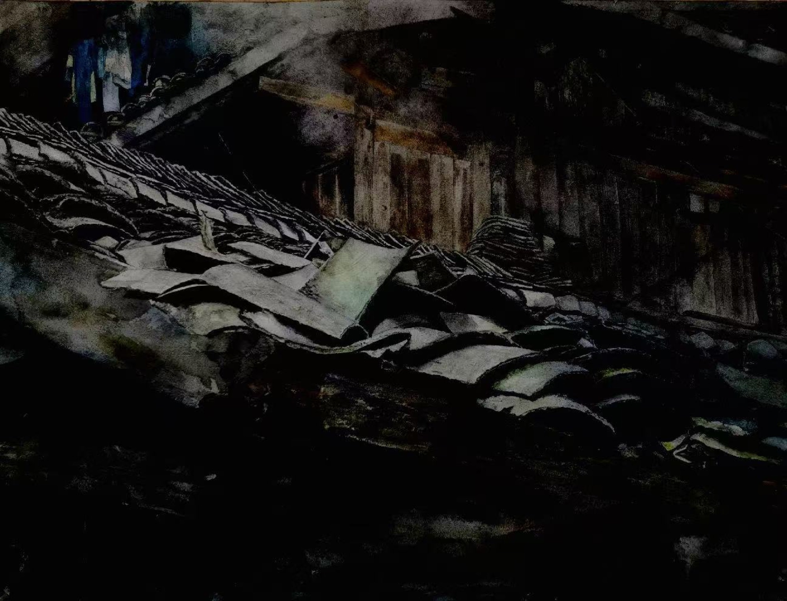

Daybreak
拂晓

- Artwork ID / 作品编号
- KW-W-000023
- Year / 年份
- 2020
- Medium / 媒介
- Watercolor on paper / 纸本水彩
- Dimensions / 尺寸
- 40 × 55 cm (H × W / 高 × 宽)
About the work / 作品介绍
Daybreak depicts a construction site at the first light of dawn. Reinforcement bars, formwork, and building materials emerge gradually from darkness, creating a quiet spatial rhythm. Rather than recording construction itself, the painting reflects on the moment before human activity begins, revealing the relationship between the land, the built environment, and the anticipation of a new day.
《拂晓》以建筑工地为题材，描绘黎明时分尚未完全苏醒的施工现场。钢筋、模板与建材在低照度环境中形成富有秩序的结构关系，光线从黑暗中缓缓显现，使空间呈现出由沉寂走向生成的状态。作品关注的并非施工瞬间，而是人类建造活动开始之前所蕴含的时间张力，以及土地、建筑与未来生活之间的联系。